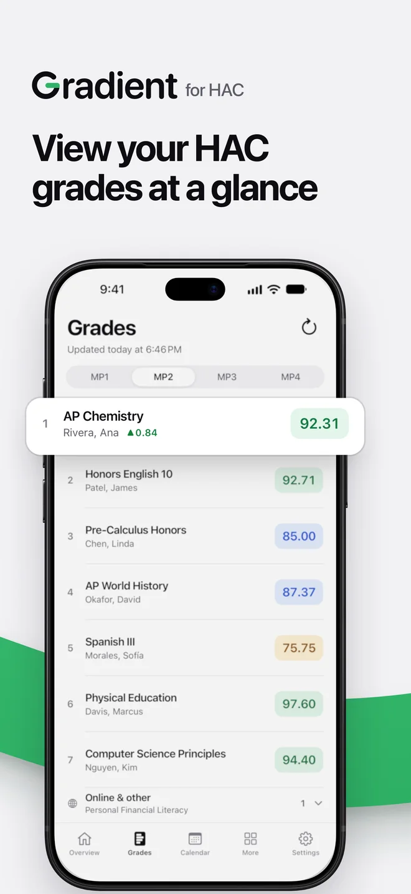
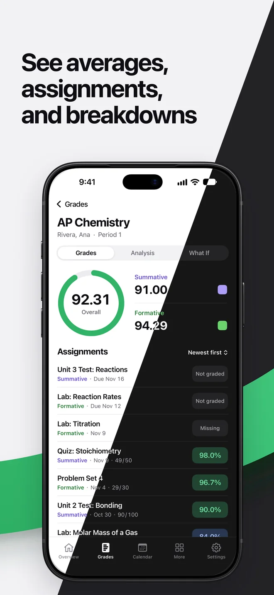
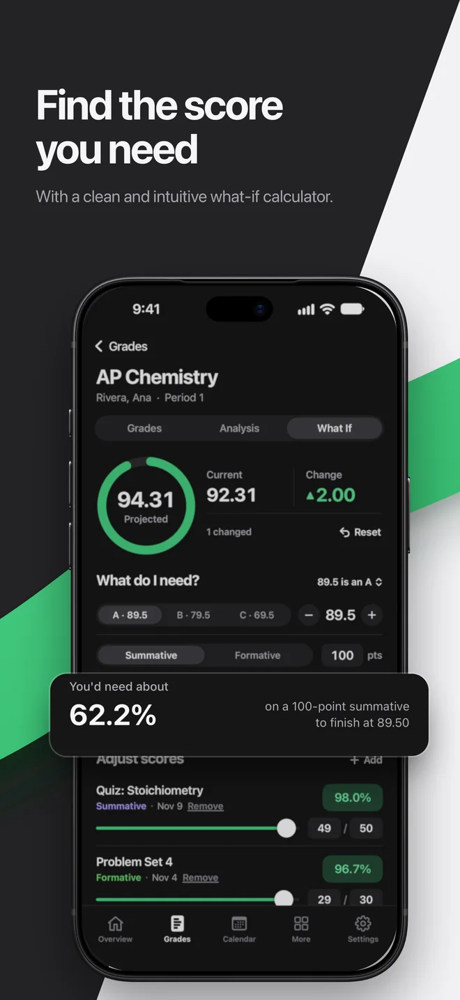
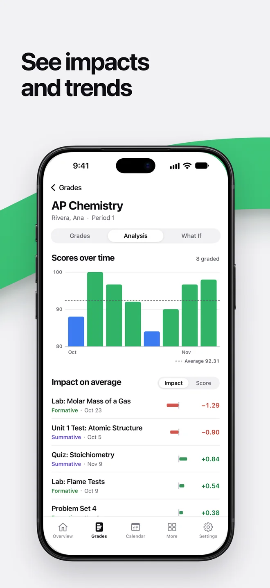
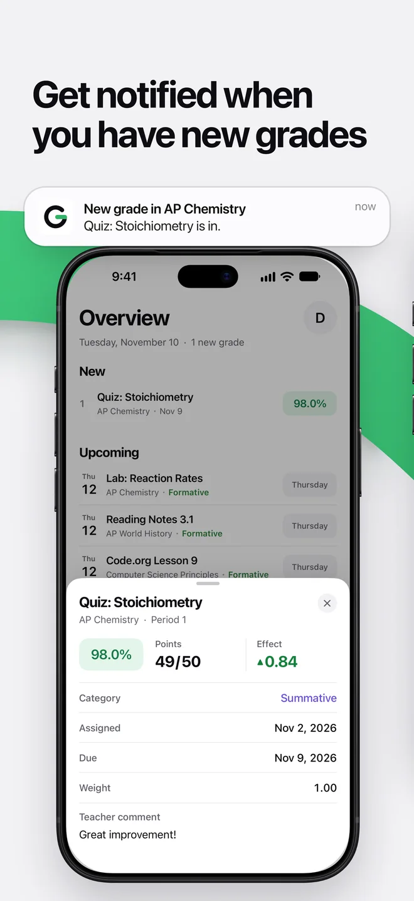
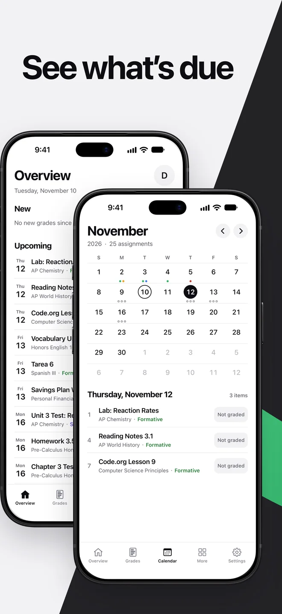
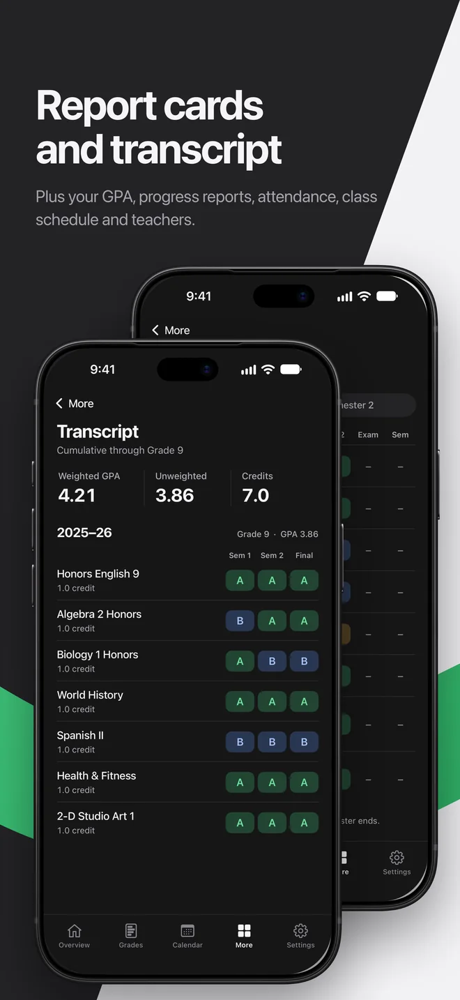
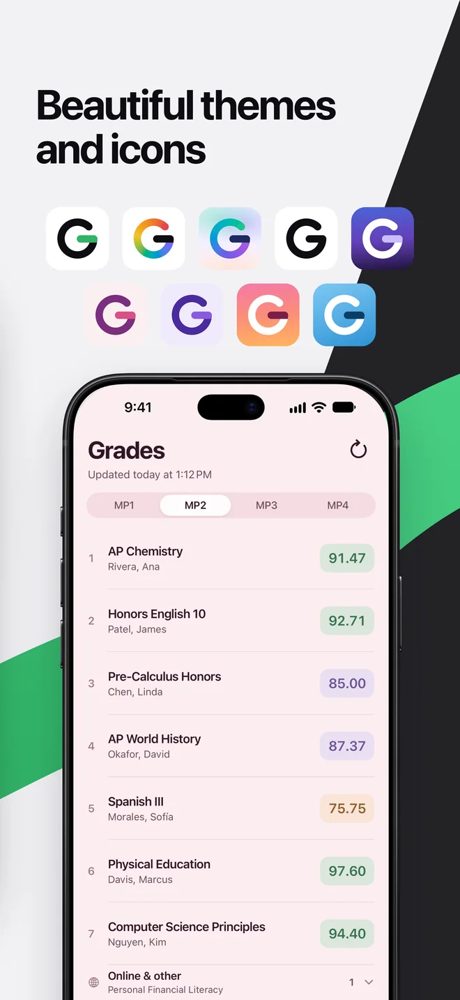
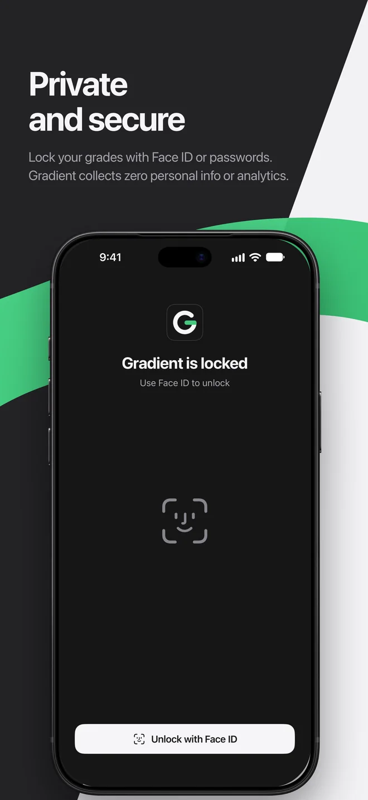

A fast, clean, and beautifully designed grade checker for Home Access Center.
Made by students, for students. No ads, no tracking.









Everything you check HAC for, done better
Zero ads
No banners, pop-ups, or sponsored anything. Just your grades.
What-if calculator
Try out scores, or find what you need to hit a target average. Free.
New grade notifications
Know when a grade is posted, without opening HAC to check.
Works with HAC
Sign in with your usual Home Access Center login. Many districts are built in, and you can add yours.
Nothing collected
No information collection, telemetry, or analytics. Your login and grades stay on your phone.
Clean and blazing fast
Opens straight to your grades, and works offline with your last refresh.
Transcripts and report cards
Your transcript and GPA, report cards, progress reports, and absences in one place.
Overview and due dates
What's due soon and your latest grades, on one screen.
Assignment calendar Supporter
Every assignment laid out on a month calendar.
Gradient Supporter
Gradient is free. An optional subscription, $3.99 a year, supports development and unlocks themes, app icons, the calendar, Analysis, and more students.